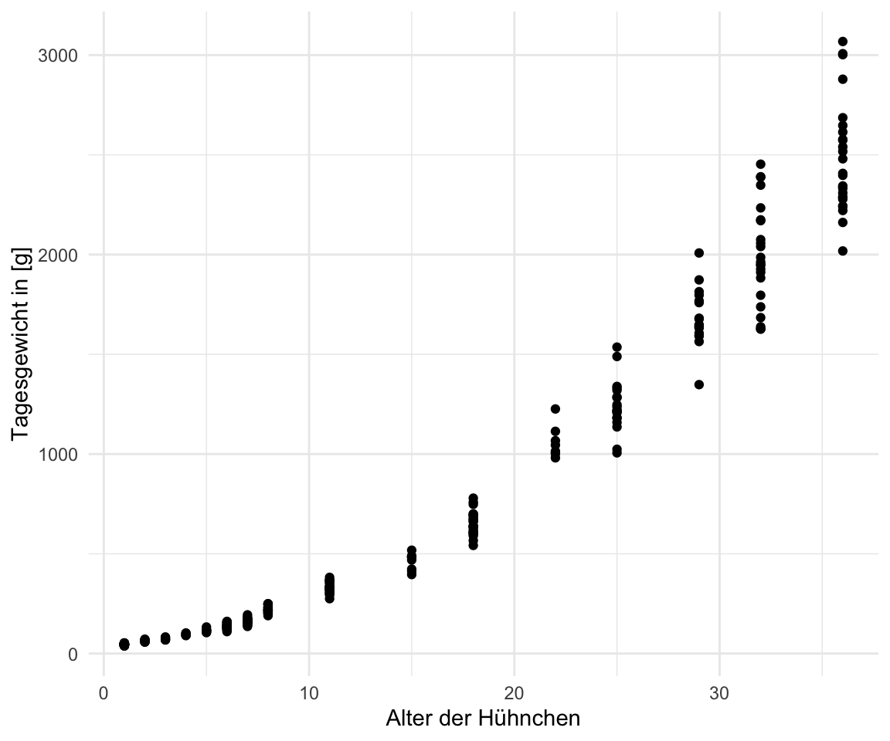
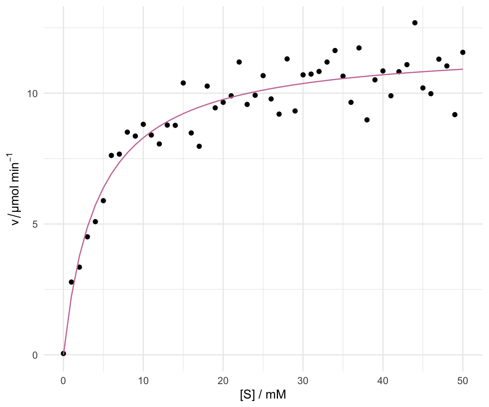

pacman::p_load(tidyverse, magrittr, conflicted, broom,
parameters, see)
conflict_prefer("select", "dplyr")
conflict_prefer("filter", "dplyr")51 Nicht lineare Regression
Letzte Änderung am 28. September 2023 um 14:04:26
Was wollen wir mit der nicht-linearen Regression erreichen? Zum einen erhalten wir durch die nicht-lineare Regression die Möglichkeit auch Abhängigkeiten zu modellieren, die nicht linear sind. Zum anderen wollen wir auch nicht nur Gruppen miteinander vergleichen, sondern auch Verläufe modellieren. Häufig sind diese Verläufe über die Zeit nicht linear. Es gibt Sättigungskurven oder aber auch einen exponentiellen Verfall oder ein exponentielles Wachstum. All dies können wir mit nicht-linearen Modellen abbilden und modellieren.
Wichtig hierbei ist, dass wir oft nicht statistsich Testen, sondern ein Modell haben wollen, dass die Punkte gut beschreibt. Mit Modell meinen wir hier die Gerade, die duch die Punkte läuft. Für diese Grade wollen wir die Koeffizienten schätzen. Also die Frage beantworten, wie \(y\) nicht-linear von \(x\) abhängt.
51.1 Genutzte R Pakete
Wir wollen folgende R Pakete in diesem Kapitel nutzen.
Am Ende des Kapitels findest du nochmal den gesamten R Code in einem Rutsch zum selber durchführen oder aber kopieren.
51.2 Daten
In unserem Datenbeispiel schauen wir uns die Wachstumskurve von Hühnchen an. Wir verfolgen das Gewicht über 36 Tage. Dabei messen wir an jedem Tag eine unterschiedliche Anzahl an Kücken bzw. Hünchen. Wir wissen auch nicht, ob wir immer die gleichen Hühnchen jedes Mal messen. Dafür war die Hühnchenmastanlage zu groß. Wir wissen aber wie alt jedes Hühnchen bei der Messung war.
chicken_tbl <- read_csv2("data/chicken_growth.csv") In Tabelle 51.1 sehen wir nochmal die Daten für die ersten drei und die letzten drei Zeilen. Alleine überschlagsmäßig sehen wir schon, dass wir es nicht mit einem linearen Anstieg des Gewichtes zu tun haben. Wenn wir einen linearen Anstieg hätten, dann würde ein Hühnchen, dass am Tag 1 ca. 48g wiegt, nach 36 Tagen ca. 1728g wiegen. Das ist hier eindeutig nicht der Fall. Wir haben vermutlich einen nicht-linearen Zusammenhang.
| age | weight |
|---|---|
| 1 | 48 |
| 1 | 46 |
| 1 | 44 |
| … | … |
| 36 | 2286 |
| 36 | 2278 |
| 36 | 2309 |
Schauen wir uns die Daten einmal mit ggplot() an um besser zu verstehen wie die Zusammenhänge in dem Datensatz sind.
51.3 Visualisierung
In Abbildung 51.1 (a) sehen wir die Visualisierung der Hühnchengewichte nach Alter in Tagen. Zum einen sehen wir wie das Körpergewicht exponentiell ansteigt. Zum anderen sehen wir in Abbildung 51.1 (b), dass auch eine \(log\)-transformiertes \(y\) nicht zu einem linearen Zusammenhang führt. Der Zusammenhang zwischen dem Körpergewicht und der Lebensalter bleibt nicht-linear.


Deshalb wollen wir den Zusammenhang zwischen dem Körpergewicht der Hühnchen und dem Lebensalter einmal mit einer nicht-linearen Regression modellieren. Wir sind also nicht so sehr an \(p\)-Werten interessiert, wir sehen ja, dass die gerade ansteigt, sondern wollen wissen wie die Koeffizienten einer möglichen exponentiellen Gleichung aussehen.
51.4 Modellieren mit nls
Zum nicht-linearen Modellieren nutzen wir die Funktion nls() (eng. nonlinear least-squares). Die Funktion nls() ist das nicht-lineare Äquivalent zu der linearen Funktion lm(). Nur müssen wir mit der nls() Funktion etwas anders umgehen. Zum einen müssen wir die formula() anders definieren. Wir nehmen ein exponentielles Wachstum an. Daher brauchen wir einen geschätzten Koeffizienten für den Exponenten des Alters sowie einen Intercept. Wir gehen nicht davon aus, dass die Hühnchen mit einem Gewicht von 0g auf die Welt bzw. in die Mastanlage kommen. Unsere Formel sehe dann wie folgt aus.
\[ weight \sim \beta_0 + age^{\beta_1} \]
Da wir in R keine \(\beta\)’s schreiben können nutzen wir die Buchstaben b0 für \(\beta_0\) und b1 für \(\beta_1\). Im Prinzip könnten wir auch andere Buchstaben nehmen, aber so bleiben wir etwas konsistenter zu der linearen Regression. Somit sieht die Gleichung dann in R wie folgt aus.
\[ weight \sim b_0 + age^{b_1} \]
Achtung! Wir müssen R noch mitteilen, dass wir age hoch b1 rechnen wollen. Um das auch wirklich so zu erhalten, zwingen wir R mit der Funktion I() auch wirklich einen Exponenten zu berechnen. Wenn wir nicht das I() nutzen, dann kann es sein, dass wir aus versehen eine Schreibweise für eine Abkürzung in der formula Umgebung nutzen.
Im Weiteren sucht die Funktion iterativ die besten Werte für b0 und b1. Deshalb müssen wir der Funktion nls() Startwerte mitgeben, die in etwa passen könnten. Hier tippe ich mal auf ein b0 = 1 und ein b1 = 1. Wenn wir einen Fehler wiedergegeben bekommen, dann können wir auch noch an den Werten drehen.
fit <- nls(weight ~ b0 + I(age^b1), data = chicken_tbl,
start = c(b0 = 1, b1 = 1))Wir nutzen wieder die Funktion model_parameters() aus dem R Paket parameters um uns eine aufgeräumte Ausgabe wiedergeben zu lassen.
fit %>%
model_parameters() %>%
select(Parameter, Coefficient)# Fixed Effects
Parameter | Coefficient
-----------------------
b0 | 92.20
b1 | 2.18Die \(p\)-Werte interssieren uns nicht weiter. Wir sehen ja, dass wir einen Effekt von dem Alter auf das Körpergewicht haben. Das überrascht auch nicht weiter. Wir wollen ja die Koeffizienten \(\beta_0\) und \(\beta_1\) um die Gleichung zu vervollständigen. Mit dem Ergebnis aus der Funktion nls() können wir jetzt wie folgt schreiben.
\[ weight \sim 92.20 + age^{2.18} \]
Damit haben wir dann auch unsere nicht-lineare Regressionsgleichung erhalten. Passt den die Gleichung auch zu unseren Daten? Das können wir einfach überprüfen. Dafür müssen wir nur in die Funktion predict() unser Objekt des Fits unseres nicht-linearen Modells fit stecken und erhalten die vorhergesagten Werte für jedes \(x\) in unserem Datensatz. Oder etwas kürzer, wir erhalten die “Gerade” der Funktion mit den Koeffizienten aus dem nls() Modell wieder. In Abbildung 51.2 sehen wir die gefittete Gerade.
ggplot(chicken_tbl, aes(age, weight)) +
geom_line(aes(y = predict(fit)), size = 1, color = "red") +
geom_point() +
theme_bw()
Wie wir erkennen können sieht die Modellierung einigermaßen gut aus. Wir haben zwar einige leichte Abweichungen von den Beobachtungen zu der geschätzten Geraden, aber im Prinzip könnten wir mit der Modellierung leben. Wir hätten jetzt also eine nicht-lineare Gleichung die den Zusammenhang zwischen Körpergewicht und Lebensalter von Hühnchen beschreibt.
Die Verwendung von nest() und map() ist schon erweiterete Programmierung in R. Du findest hier mehr über broom and dplyr und die Anwendung auf mehrere Datensätze.
Nun könnte man argumentieren, dass wir vielleicht unterschiedliche Abschnitte des Wachstums vorliegen haben. Also werden wir einmal das Alter in Tagen in vier gleich große Teile mit der Funktion cut_number() schneiden. Beachte bitte, dass in jeder Gruppe gleich viele Beobachtungen sind. Du kannst sonst händisch über case_when() innerhalb von mutate() dir eigene Gruppen bauen. Wir nutzen auch die Funktion map() um über alle Subgruppen des Datensatzes dann ein nls() laufen zu lassen.
nls_tbl <- chicken_tbl %>%
mutate(grp = as_factor(cut_number(age, 4))) %>%
group_by(grp) %>%
nest() %>%
mutate(nls_fit = map(data, ~nls(weight ~ b0 + I(age^b1), data = .x,
start = c(b0 = 1, b1 = 2))),
pred = map(nls_fit, ~predict(.x))) Um den Codeblock oben kurz zu erklären. Wir rechnen vier nicht-lineare Regressionen auf den vier Altersgruppen. Dann müssen wir uns noch die vorhergesagten Werte wiedergeben lassen damit wir die gefittete Gerade zeichnen können. Wir nutzen dazu die Funktion unnest() um die Daten zusammen mit den vorhergesagten Werten zu erhalten.
nls_pred_tbl <- nls_tbl %>%
unnest(c(data, pred))In Abbildung 51.3 sehen wir die vier einzelnen Geraden für die vier Altersgruppen. Wir sind visuell besser als über alle Altersgruppen hinweg. Das ist doch mal ein schönes Ergebnis.

Wir können uns jetzt noch die b0 und b1 für jede der vier Altergruppen wiedergeben lassen. Wir räumen etwas auf und geben über select() nur die Spalten wieder, die wir auch brauchen und uns interessieren.
nls_tbl %>%
mutate(tidied = map(nls_fit, tidy)) %>%
unnest(tidied) %>%
select(grp, term, estimate) # A tibble: 8 × 3
# Groups: grp [4]
grp term estimate
<fct> <chr> <dbl>
1 [1,2] b0 44.4
2 [1,2] b1 4.21
3 (2,8] b0 60.1
4 (2,8] b1 2.42
5 (8,25] b0 128.
6 (8,25] b1 2.18
7 (25,36] b0 330.
8 (25,36] b1 2.14Was sehen wir? Wir erhalten insgesamt acht Koeffizienten und können darüber dann unsere vier exponentiellen Gleichungen für unsere Altergruppen erstellen. Wir sehen, dass besonders in der ersten Gruppe des Alters von 1 bis 2 Tagen wir den Intercept überschätzen und den Exponenten unterschätzen. In den anderen Altersgruppen passt dann der Exponent wieder zu unserem ursprünglichen Modell über alle Altersgruppen.
\[ weight_{[1-2]} \sim 44.4 + age^{4.21} \]
\[ weight_{(2-8]} \sim 60.1 + age^{2.42} \]
\[ weight_{(8-25]} \sim 128.0 + age^{2.18} \]
\[ weight_{(25-36]} \sim 330.0 + age^{2.14} \]
Je nachdem wie zufrieden wir jetzt mit den Ergebnissen der Modellierung sind, könnten wir auch andere Altersgruppen noch mit einfügen. Wir belassen es bei dieser Modellierung und schauen uns nochmal die andere Richtung an. Wir betrachten einen exponentziellen Verfall einer Blattläuse Population.
Wir wollen die folgende Gleichung lösen und die Werte für die Konstante \(a\) und den Exponenten \(\beta_1\) schätzen. Wir haben diesmal keinen Intercept vorliegen.
\[ count \sim a \cdot week^{\beta_1} \]
Die Daten sind angelegt an ein Experiment zu Blattlauskontrolle. Wir haben ein neues Biopestizid welchen wir auf die Blattläuse auf Rosen sprühen. Wir zählen dann automatisiert über eine Kamera und Bilderkennung wie viele Blattläuse sich nach den Wochen des wiederholten Sprühens noch auf den Rosen befinden. Wir erhalten damit folgende Daten im Objekt exp_tbl.
set.seed(20221018)
exp_tbl <- tibble(count = c(rnorm(10, 17906, 17906/4),
rnorm(10, 5303, 5303/4),
rnorm(10, 2700, 2700/4),
rnorm(10, 1696, 1696/4),
rnorm(10, 947, 947/4),
rnorm(10, 362, 362/4)),
weeks = rep(1:6, each = 10)) Wir müssen ja wieder die Startwerte in der Funktion nls() angeben. Meistens raten wir diese oder schauen auf die Daten um zu sehen wo diese Werte in etwa liegen könnten. Dann kann die Funktion nls() diese Startwerte dann optimieren. Es gibt aber noch einen anderen Trick. Wir rechnen eine lineare Regression über die \(log\)-transformierten Daten und nehmen dann die Koeffizienten aus dem linearen Modell als Startwerte für unsere nicht-lineare Regression.
lm(log(count) ~ log(weeks), exp_tbl)
Call:
lm(formula = log(count) ~ log(weeks), data = exp_tbl)
Coefficients:
(Intercept) log(weeks)
9.961 -2.024 Aus der linearen Regression erhalten wir einen Intercept von \(9.961\) und eine Steigung von \(-2.025\). Wir exponieren den Intercept und erhalten den Wert für \(a\) mit \(\exp(9.961)\). Für den Exponenten \(b1\) tragen wir den Wert \(-2.025\) als Startwert ein. Mit diesem Trick erhalten wir etwas bessere Startwerte und müssen nicht so viel rumprobieren.
fit <- nls(count ~ a * I(weeks^b1), data = exp_tbl,
start = c(a = exp(9.961), b1 = -2.025))Wir können uns noch die Koeffizienten wiedergeben lassen und die Geradengleichung vervollständigen. Wie du siehst sind die Werte natürlich anders als die Startwerte. Wir hätten aber ziemlich lange rumprobieren müssen bis wir nahe genug an die Startwerte gekommen wären damit die Funktion nls() iterativ eine Lösung für die Gleichung findet.
fit %>%
model_parameters() %>%
select(Parameter, Coefficient)# Fixed Effects
Parameter | Coefficient
-----------------------
a | 17812.11
b1 | -1.69Abschließend können wir dann die Koeffizienten in die Geradengleichung eintragen.
\[ count \sim 17812.11 \cdot week^{-1.69} \]
In Abbildung 51.4 sehen wir die Daten zusammen mit der gefitteten Gerade aus der nicht-linearen Regression. Wir sehen, dass die Gerade ziemlich gut durch die Mitte der jeweiligen Punkte läuft.
ggplot(exp_tbl, aes(weeks, count)) +
theme_bw() +
geom_point() +
geom_line(aes(y = predict(fit)), color = "red") +
scale_x_continuous(breaks = 1:6)
51.5 Modellieren der Michaelis-Menten Gleichung
In diesem Abschnitt wollen wir uns mit dem Modellieren einer Sättigungskurve beschäftigen. Daher bietet sich natürlich die Michaelis-Menten-Gleichung an. Die Daten in enzyme.csv geben die Geschwindigkeit \(v\) des Enzyms saure Phosphatase (\(\mu mol/min\)) bei verschiedenen Konzentrationen des Substrats Nitrophenolphosphat, [S] (mM), an. Die Daten können mit der Michaelis-Menten-Gleichung modelliert werden und somit kann eine nichtlineare Regression kann verwendet werden, um \(K_M\) und \(v_{max}\) zu schätzen.
enzyme_tbl <- read_csv2(file.path("data/enzyme.csv")) %>%
rename(S = concentration, v = rate)In Tabelle 51.2 sehen wir einen Auszug aus den Enzymedaten. Eigentlich relativ klar. Wir haben eine Konzentration \(S\) vorliegen und eine Geschwindigkeit \(v\).
| S | v |
|---|---|
| 0 | 0.05 |
| 1 | 2.78 |
| 2 | 3.35 |
| … | … |
| 48 | 11.04 |
| 49 | 9.18 |
| 50 | 11.56 |
Schauen wir uns die Daten einmal in der Abbildung 51.5 an. Wir legen die Konzentration \(S\) auf die \(x\)-Achse und Geschwindigkeit \(v\) auf die \(y\)-Achse.
ggplot(enzyme_tbl, aes(x = S, y = v)) +
theme_bw() +
geom_point() +
labs(x = "[S] / mM", y = expression(v/"µmol " * min^-1))Die Reaktionsgleichung abgeleitet aus der Michaelis-Menten-Kinetik lässt sich allgemein wie folgt darstellen. Wir haben die Konzentration \(S\) und die Geschwindigkeit \(v\) gegeben und wollen nun über eine nicht-lineare Regression die Werte für \(v_{max}\) und \(K_M\) schätzen.
\[ v = \cfrac{v_{max} \cdot S}{K_M + S} \]
Dabei gibt \(v\) die initiale Reaktionsgeschwindigkeit bei einer bestimmten Substratkonzentration [S] an. Mit \(v_{max}\) beschreiben wir die maximale Reaktionsgeschwindigkeit. Eine Kenngröße für eine enzymatische Reaktion ist die Michaeliskonstante \(K_M\). Sie hängt von der jeweiligen enzymatischen Reaktion ab. \(K_M\) gibt die Substratkonzentration an, bei der die Umsatzgeschwindigkeit halbmaximal ist und somit \(v = 1/2 \cdot v_{max}\) ist. Wir haben dann die Halbsättigung vorliegen.
Bauen wir also die GLeichung in R nach und geben die Startwerte für \(v_{max}\) und \(K_M\) für die Funktion nls() vor. Die Funktion nls() versucht jetzt die beste Lösung für die beiden Koeffizienten zu finden. I
enzyme_fit <- nls(v ~ vmax * S /( KM + S ), data = enzyme_tbl,
start = c(vmax = 9, KM = 2))Wir können uns dann die Koeffizienten ausgeben lassen.
enzyme_fit %>%
model_parameters() %>%
select(Parameter, Coefficient)# Fixed Effects
Parameter | Coefficient
-----------------------
vmax | 11.85
KM | 4.28Jetzt müssen wir die Michaelis-Menten-Gleichung nur noch um die Koeffizienten ergänzen.
\[ v = \cfrac{11.85 \cdot S}{4.28 + S} \]
In der Abbildung 51.6 können wir die gefittete Gerade nochmal überprüfen und schauen ob das Modellieren geklappt hat. Ja, hat es die Gerade läuft direkt mittig durch die Punkte.
ggplot(enzyme_tbl, aes(x = S, y = v)) +
theme_bw() +
geom_point() +
geom_line(aes(y = predict(enzyme_fit)), color = "red") +
labs(x = "[S] / mM", y = expression(v/"µmol " * min^-1))